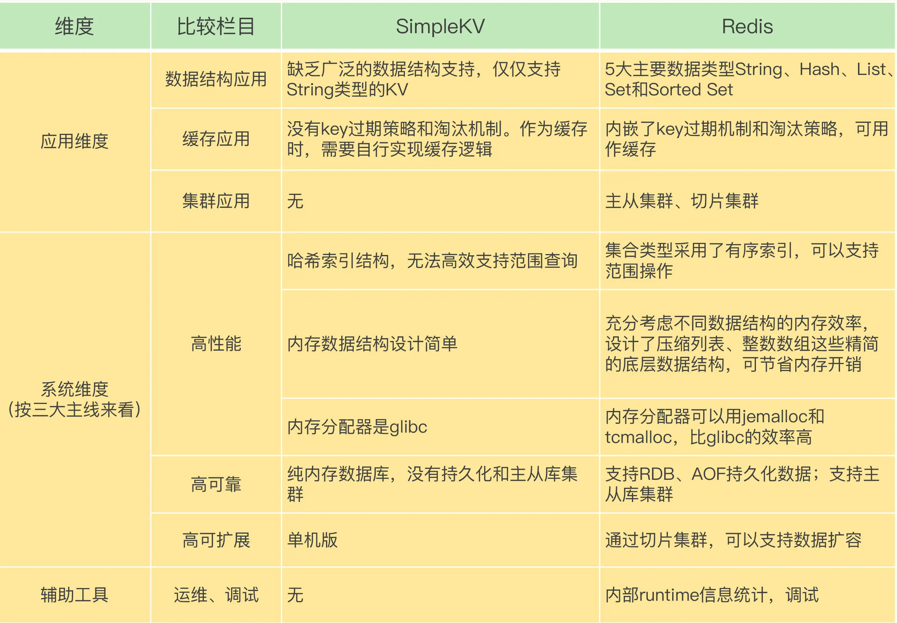
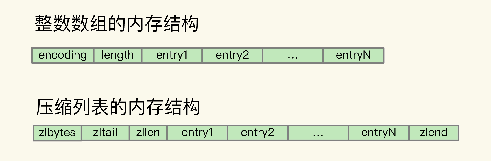
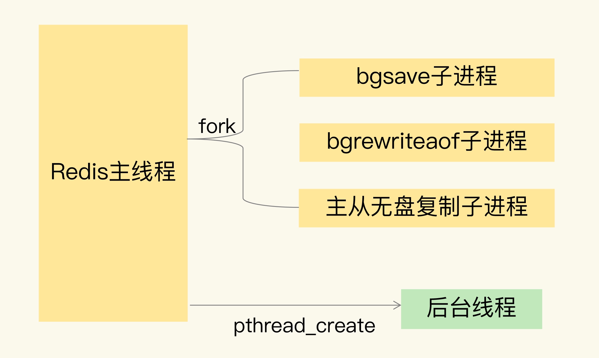
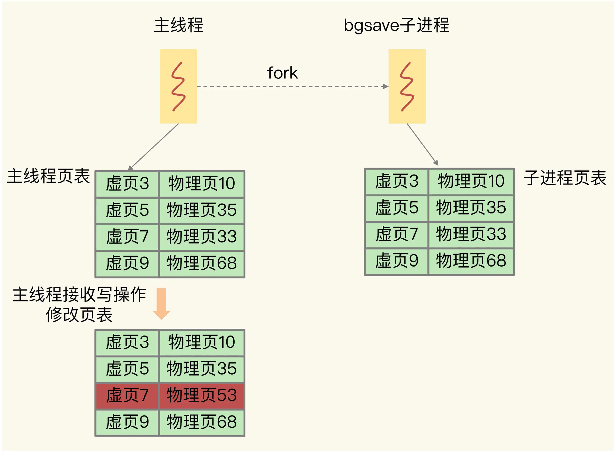
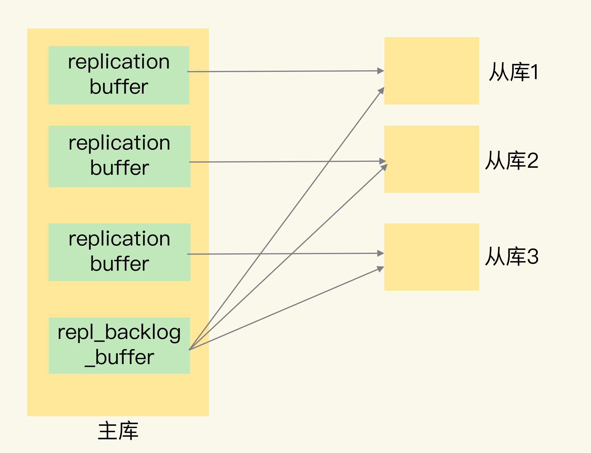

- 00 开篇词 这样学Redis，才能技高一筹.md
- 01 基本架构：一个键值数据库包含什么？.md
- 02 数据结构：快速的Redis有哪些慢操作？.md
- 03 高性能IO模型：为什么单线程Redis能那么快？.md
- 04 AOF日志：宕机了，Redis如何避免数据丢失？.md
- 05 内存快照：宕机后，Redis如何实现快速恢复？.md
- 06 数据同步：主从库如何实现数据一致？.md
- 07 哨兵机制：主库挂了，如何不间断服务？.md
- 08 哨兵集群：哨兵挂了，主从库还能切换吗？.md
- 09 切片集群：数据增多了，是该加内存还是加实例？.md
- 10 第1～9讲课后思考题答案及常见问题答疑.md
- 11 “万金油”的String，为什么不好用了？.md
- 12 有一亿个keys要统计，应该用哪种集合？.md
- 13 GEO是什么？还可以定义新的数据类型吗？.md
- 14 如何在Redis中保存时间序列数据？.md
- 15 消息队列的考验：Redis有哪些解决方案？.md
- 16 异步机制：如何避免单线程模型的阻塞？.md
- 17 为什么CPU结构也会影响Redis的性能？.md
- 18 波动的响应延迟：如何应对变慢的Redis？（上）.md
- 19 波动的响应延迟：如何应对变慢的Redis？（下）.md
- 20 删除数据后，为什么内存占用率还是很高？.md
- 21 缓冲区：一个可能引发“惨案”的地方.md
- 22 第11～21讲课后思考题答案及常见问题答疑.md
- 23 旁路缓存：Redis是如何工作的？.md
- 24 替换策略：缓存满了怎么办？.md
- 25 缓存异常（上）：如何解决缓存和数据库的数据不一致问题？.md
- 26 缓存异常（下）：如何解决缓存雪崩、击穿、穿透难题？.md
- 27 缓存被污染了，该怎么办？.md
- 28 Pika：如何基于SSD实现大容量Redis？.md
- 29 无锁的原子操作：Redis如何应对并发访问？.md
- 30 如何使用Redis实现分布式锁？.md
- 31 事务机制：Redis能实现ACID属性吗？.md
- 32 Redis主从同步与故障切换，有哪些坑？.md
- 33 脑裂：一次奇怪的数据丢失.md
- 34 第23~33讲课后思考题答案及常见问题答疑.md
- 35 Codis VS Redis Cluster：我该选择哪一个集群方案？.md
- 36 Redis支撑秒杀场景的关键技术和实践都有哪些？.md
- 37 数据分布优化：如何应对数据倾斜？.md
- 38 通信开销：限制Redis Cluster规模的关键因素.md
- 39 Redis 6.0的新特性：多线程、客户端缓存与安全.md
- 40 Redis的下一步：基于NVM内存的实践.md
- 41 第35～40讲课后思考题答案及常见问题答疑.md
- 加餐 01 经典的Redis学习资料有哪些？.md
- 加餐 02 用户Kaito：我是如何学习Redis的？.md
- 加餐 03 用户Kaito：我希望成为在压力中成长的人.md
- 加餐 04 Redis客户端如何与服务器端交换命令和数据？.md
- 加餐 05 Redis有哪些好用的运维工具？.md
- 加餐 06 Redis的使用规范小建议.md
- 加餐 07 从微博的Redis实践中，我们可以学到哪些经验？.md
- 结束语 从学习Redis到向Redis学习.md
10 第1～9讲课后思考题答案及常见问题答疑
咱们的课程已经更新 9 讲了，这段时间，我收到了很多留言。很多同学都认真地回答了课后思考题，有些回答甚至可以说是标准答案。另外，还有很多同学针对 Redis 的基本原理和关键机制，提出了非常好的问题，值得好好讨论一下。
今天，我就和你聊一聊课后题答案，并且挑选一些典型问题，集中进行一次讲解，希望可以解决你的困惑。
课后思考题答案
第 1 讲
问题：和跟 Redis 相比，SimpleKV 还缺少什么？
@曾轼麟、@Kaito 同学给出的答案都非常棒。他们从数据结构到功能扩展，从内存效率到事务性，从高可用集群再到高可扩展集群，对 SimpleKV 和 Redis 进行了详细的对比。而且，他们还从运维使用的角度进行了分析。我先分享一下两位同学的答案。
@曾轼麟同学：
- 数据结构：缺乏广泛的数据结构支持，比如支持范围查询的 SkipList 和 Stream 等数据结构。
- 高可用：缺乏哨兵或者 master-slave 模式的高可用设计；
- 内存安全性：缺乏内存过载时的 key 淘汰算法的支持；
- 内存利用率：没有充分对数据结构进行优化，提高内存利用率，例如使用压缩性的数据结构；
@Kaito 同学：
SimpleKV 所缺少的有：丰富的数据类型、支持数据压缩、过期机制、数据淘汰策略、主从复制、集群化、高可用集群等，另外，还可以增加统计模块、通知模块、调试模块、元数据查询等辅助功能。
我也给个答案总结。还记得我在【开篇词】讲过的“两大维度”“三大主线”吗？这里我们也可以借助这个框架进行分析，如下表所示。此外，在表格最后，我还从键值数据库开发和运维的辅助工具上，对 SimpleKV 和 Redis 做了对比。

第 2 讲
问题：整数数组和压缩列表作为底层数据结构的优势是什么？
整数数组和压缩列表的设计，充分体现了 Redis“又快又省”特点中的“省”，也就是节省内存空间。整数数组和压缩列表都是在内存中分配一块地址连续的空间，然后把集合中的元素一个接一个地放在这块空间内，非常紧凑。因为元素是挨个连续放置的，我们不用再通过额外的指针把元素串接起来，这就避免了额外指针带来的空间开销。
我画一张图，展示下这两个结构的内存布局。整数数组和压缩列表中的 entry 都是实际的集合元素，它们一个挨一个保存，非常节省内存空间。

Redis 之所以采用不同的数据结构，其实是在性能和内存使用效率之间进行的平衡。
第 3 讲
问题：Redis 基本 IO 模型中还有哪些潜在的性能瓶颈？
这个问题是希望你能进一步理解阻塞操作对 Redis 单线程性能的影响。在 Redis 基本 IO 模型中，主要是主线程在执行操作，任何耗时的操作，例如 bigkey、全量返回等操作，都是潜在的性能瓶颈。
第 4 讲
问题 1：AOF 重写过程中有没有其他潜在的阻塞风险？
这里有两个风险。
风险一：Redis 主线程 fork 创建 bgrewriteaof 子进程时，内核需要创建用于管理子进程的相关数据结构，这些数据结构在操作系统中通常叫作进程控制块（Process Control Block，简称为 PCB）。内核要把主线程的 PCB 内容拷贝给子进程。这个创建和拷贝过程由内核执行，是会阻塞主线程的。而且，在拷贝过程中，子进程要拷贝父进程的页表，这个过程的耗时和 Redis 实例的内存大小有关。如果 Redis 实例内存大，页表就会大，fork 执行时间就会长，这就会给主线程带来阻塞风险。
风险二：bgrewriteaof 子进程会和主线程共享内存。当主线程收到新写或修改的操作时，主线程会申请新的内存空间，用来保存新写或修改的数据，如果操作的是 bigkey，也就是数据量大的集合类型数据，那么，主线程会因为申请大空间而面临阻塞风险。因为操作系统在分配内存空间时，有查找和锁的开销，这就会导致阻塞。
问题 2：AOF 重写为什么不共享使用 AOF 本身的日志？
如果都用 AOF 日志的话，主线程要写，bgrewriteaof 子进程也要写，这两者会竞争文件系统的锁，这就会对 Redis 主线程的性能造成影响。
第 5 讲
问题：使用一个 2 核 CPU、4GB 内存、500GB 磁盘的云主机运行 Redis，Redis 数据库的数据量大小差不多是 2GB。当时 Redis 主要以修改操作为主，写读比例差不多在 8:2 左右，也就是说，如果有 100 个请求，80 个请求执行的是修改操作。在这个场景下，用 RDB 做持久化有什么风险吗？
@Kaito 同学的回答从内存资源和 CPU 资源两方面分析了风险，非常棒。我稍微做了些完善和精简，你可以参考一下。
内存不足的风险：Redis fork 一个 bgsave 子进程进行 RDB 写入，如果主线程再接收到写操作，就会采用写时复制。写时复制需要给写操作的数据分配新的内存空间。本问题中写的比例为 80%，那么，在持久化过程中，为了保存 80% 写操作涉及的数据，写时复制机制会在实例内存中，为这些数据再分配新内存空间，分配的内存量相当于整个实例数据量的 80%，大约是 1.6GB，这样一来，整个系统内存的使用量就接近饱和了。此时，如果实例还有大量的新 key 写入或 key 修改，云主机内存很快就会被吃光。如果云主机开启了 Swap 机制，就会有一部分数据被换到磁盘上，当访问磁盘上的这部分数据时，性能会急剧下降。如果云主机没有开启 Swap，会直接触发 OOM，整个 Redis 实例会面临被系统 kill 掉的风险。
主线程和子进程竞争使用 CPU 的风险：生成 RDB 的子进程需要 CPU 核运行，主线程本身也需要 CPU 核运行，而且，如果 Redis 还启用了后台线程，此时，主线程、子进程和后台线程都会竞争 CPU 资源。由于云主机只有 2 核 CPU，这就会影响到主线程处理请求的速度。
第 6 讲
问题：为什么主从库间的复制不使用 AOF？
答案：有两个原因。
- RDB 文件是二进制文件，无论是要把 RDB 写入磁盘，还是要通过网络传输 RDB，IO 效率都比记录和传输 AOF 的高。
- 在从库端进行恢复时，用 RDB 的恢复效率要高于用 AOF。
第 7 讲
问题 1：在主从切换过程中，客户端能否正常地进行请求操作呢？
主从集群一般是采用读写分离模式，当主库故障后，客户端仍然可以把读请求发送给从库，让从库服务。但是，对于写请求操作，客户端就无法执行了。
问题 2：如果想要应用程序不感知服务的中断，还需要哨兵或客户端再做些什么吗？
一方面，客户端需要能缓存应用发送的写请求。只要不是同步写操作（Redis 应用场景一般也没有同步写），写请求通常不会在应用程序的关键路径上，所以，客户端缓存写请求后，给应用程序返回一个确认就行。
另一方面，主从切换完成后，客户端要能和新主库重新建立连接，哨兵需要提供订阅频道，让客户端能够订阅到新主库的信息。同时，客户端也需要能主动和哨兵通信，询问新主库的信息。
第 8 讲
问题 1：5 个哨兵实例的集群，quorum 值设为 2。在运行过程中，如果有 3 个哨兵实例都发生故障了，此时，Redis 主库如果有故障，还能正确地判断主库“客观下线”吗？如果可以的话，还能进行主从库自动切换吗？
因为判定主库“客观下线”的依据是，认为主库“主观下线”的哨兵个数要大于等于 quorum 值，现在还剩 2 个哨兵实例，个数正好等于 quorum 值，所以还能正常判断主库是否处于“客观下线”状态。如果一个哨兵想要执行主从切换，就要获到半数以上的哨兵投票赞成，也就是至少需要 3 个哨兵投票赞成。但是，现在只有 2 个哨兵了，所以就无法进行主从切换了。
问题 2：哨兵实例是不是越多越好呢？如果同时调大 down-after-milliseconds 值，对减少误判是不是也有好处？
哨兵实例越多，误判率会越低，但是在判定主库下线和选举 Leader 时，实例需要拿到的赞成票数也越多，等待所有哨兵投完票的时间可能也会相应增加，主从库切换的时间也会变长，客户端容易堆积较多的请求操作，可能会导致客户端请求溢出，从而造成请求丢失。如果业务层对 Redis 的操作有响应时间要求，就可能会因为新主库一直没有选定，新操作无法执行而发生超时报警。
调大 down-after-milliseconds 后，可能会导致这样的情况：主库实际已经发生故障了，但是哨兵过了很长时间才判断出来，这就会影响到 Redis 对业务的可用性。
第 9 讲
问题：为什么 Redis 不直接用一个表，把键值对和实例的对应关系记录下来？
如果使用表记录键值对和实例的对应关系，一旦键值对和实例的对应关系发生了变化（例如实例有增减或者数据重新分布），就要修改表。如果是单线程操作表，那么所有操作都要串行执行，性能慢；如果是多线程操作表，就涉及到加锁开销。此外，如果数据量非常大，使用表记录键值对和实例的对应关系，需要的额外存储空间也会增加。
基于哈希槽计算时，虽然也要记录哈希槽和实例的对应关系，但是哈希槽的个数要比键值对的个数少很多，无论是修改哈希槽和实例的对应关系，还是使用额外空间存储哈希槽和实例的对应关系，都比直接记录键值对和实例的关系的开销小得多。
好了，这些问题你都回答上来了吗？如果你还有其他想法，也欢迎多多留言，跟我和其他同学进行交流讨论。
典型问题讲解
接下来，我再讲一些代表性问题，包括 Redis rehash 的时机和执行机制，主线程、子进程和后台线程的联系和区别，写时复制的底层实现原理，以及 replication buffer 和 repl_backlog_buffer 的区别。
问题 1：rehash 的触发时机和渐进式执行机制
我发现，很多同学对 Redis 的哈希表数据结构都很感兴趣，尤其是哈希表的 rehash 操作，所以，我再集中回答两个问题。
1.Redis 什么时候做 rehash？
Redis 会使用装载因子（load factor）来判断是否需要做 rehash。装载因子的计算方式是，哈希表中所有 entry 的个数除以哈希表的哈希桶个数。Redis 会根据装载因子的两种情况，来触发 rehash 操作：
- 装载因子≥1，同时，哈希表被允许进行 rehash；
- 装载因子≥5。
在第一种情况下，如果装载因子等于 1，同时我们假设，所有键值对是平均分布在哈希表的各个桶中的，那么，此时，哈希表可以不用链式哈希，因为一个哈希桶正好保存了一个键值对。
但是，如果此时再有新的数据写入，哈希表就要使用链式哈希了，这会对查询性能产生影响。在进行 RDB 生成和 AOF 重写时，哈希表的 rehash 是被禁止的，这是为了避免对 RDB 和 AOF 重写造成影响。如果此时，Redis 没有在生成 RDB 和重写 AOF，那么，就可以进行 rehash。否则的话，再有数据写入时，哈希表就要开始使用查询较慢的链式哈希了。
在第二种情况下，也就是装载因子大于等于 5 时，就表明当前保存的数据量已经远远大于哈希桶的个数，哈希桶里会有大量的链式哈希存在，性能会受到严重影响，此时，就立马开始做 rehash。
刚刚说的是触发 rehash 的情况，如果装载因子小于 1，或者装载因子大于 1 但是小于 5，同时哈希表暂时不被允许进行 rehash（例如，实例正在生成 RDB 或者重写 AOF），此时，哈希表是不会进行 rehash 操作的。
2. 采用渐进式 hash 时，如果实例暂时没有收到新请求，是不是就不做 rehash 了？
其实不是的。Redis 会执行定时任务，定时任务中就包含了 rehash 操作。所谓的定时任务，就是按照一定频率（例如每 100ms/ 次）执行的任务。
在 rehash 被触发后，即使没有收到新请求，Redis 也会定时执行一次 rehash 操作，而且，每次执行时长不会超过 1ms，以免对其他任务造成影响。
问题 2：主线程、子进程和后台线程的联系与区别
我在课程中提到了主线程、主进程、子进程、子线程和后台线程这几个词，有些同学可能会有疑惑，我再帮你总结下它们的区别。
首先，我来解释一下进程和线程的区别。
从操作系统的角度来看，进程一般是指资源分配单元，例如一个进程拥有自己的堆、栈、虚存空间（页表）、文件描述符等；而线程一般是指 CPU 进行调度和执行的实体。
了解了进程和线程的区别后，我们再来看下什么是主进程和主线程。
如果一个进程启动后，没有再创建额外的线程，那么，这样的进程一般称为主进程或主线程。
举个例子，下面是我写的一个 C 程序片段，main 函数会直接调用一个 worker 函数，函数 worker 就是执行一个 for 循环计算。下面这个程序运行后，它自己就是一个主进程，同时也是个主线程。
int counter = 0;
void *worker() {
for (int i=0;i<10;i++) {
counter++;
}
return NULL;
}
int main(int argc, char *argv[]) {
worker();
}
和这段代码类似，Redis 启动以后，本身就是一个进程，它会接收客户端发送的请求，并处理读写操作请求。而且，接收请求和处理请求操作是 Redis 的主要工作，Redis 没有再依赖于其他线程，所以，我一般把完成这个主要工作的 Redis 进程，称为主进程或主线程。
在主线程中，我们还可以使用 fork 创建子进程，或是使用 pthread_create 创建线程。下面我先介绍下 Redis 中用 fork 创建的子进程有哪些。
- 创建 RDB 的后台子进程，同时由它负责在主从同步时传输 RDB 给从库；
- 通过无盘复制方式传输 RDB 的子进程；
- bgrewriteaof 子进程。
然后，我们再看下 Redis 使用的线程。从 4.0 版本开始，Redis 也开始使用 pthread_create 创建线程，这些线程在创建后，一般会自行执行一些任务，例如执行异步删除任务。相对于完成主要工作的主线程来说，我们一般可以称这些线程为后台线程。关于 Redis 后台线程的具体执行机制，我会在第 16 讲具体介绍。
为了帮助你更好地理解，我画了一张图，展示了它们的区别。

问题 3：写时复制的底层实现机制
Redis 在使用 RDB 方式进行持久化时，会用到写时复制机制。我在第 5 节课讲写时复制的时候，着重介绍了写时复制的效果：bgsave 子进程相当于复制了原始数据，而主线程仍然可以修改原来的数据。
今天，我再具体讲一讲写时复制的底层实现机制。
对 Redis 来说，主线程 fork 出 bgsave 子进程后，bgsave 子进程实际是复制了主线程的页表。这些页表中，就保存了在执行 bgsave 命令时，主线程的所有数据块在内存中的物理地址。这样一来，bgsave 子进程生成 RDB 时，就可以根据页表读取这些数据，再写入磁盘中。如果此时，主线程接收到了新写或修改操作，那么，主线程会使用写时复制机制。具体来说，写时复制就是指，主线程在有写操作时，才会把这个新写或修改后的数据写入到一个新的物理地址中，并修改自己的页表映射。
我来借助下图中的例子，具体展示一下写时复制的底层机制。
bgsave 子进程复制主线程的页表以后，假如主线程需要修改虚页 7 里的数据，那么，主线程就需要新分配一个物理页（假设是物理页 53），然后把修改后的虚页 7 里的数据写到物理页 53 上，而虚页 7 里原来的数据仍然保存在物理页 33 上。这个时候，虚页 7 到物理页 33 的映射关系，仍然保留在 bgsave 子进程中。所以，bgsave 子进程可以无误地把虚页 7 的原始数据写入 RDB 文件。

问题 4：replication buffer 和 repl_backlog_buffer 的区别
在进行主从复制时，Redis 会使用 replication buffer 和 repl_backlog_buffer，有些同学可能不太清楚它们的区别，我再解释下。
总的来说，replication buffer 是主从库在进行全量复制时，主库上用于和从库连接的客户端的 buffer，而 repl_backlog_buffer 是为了支持从库增量复制，主库上用于持续保存写操作的一块专用 buffer。
Redis 主从库在进行复制时，当主库要把全量复制期间的写操作命令发给从库时，主库会先创建一个客户端，用来连接从库，然后通过这个客户端，把写操作命令发给从库。在内存中，主库上的客户端就会对应一个 buffer，这个 buffer 就被称为 replication buffer。Redis 通过 client_buffer 配置项来控制这个 buffer 的大小。主库会给每个从库建立一个客户端，所以 replication buffer 不是共享的，而是每个从库都有一个对应的客户端。
repl_backlog_buffer 是一块专用 buffer，在 Redis 服务器启动后，开始一直接收写操作命令，这是所有从库共享的。主库和从库会各自记录自己的复制进度，所以，不同的从库在进行恢复时，会把自己的复制进度（slave_repl_offset）发给主库，主库就可以和它独立同步。

好了，这节课就到这里。非常感谢你的仔细思考和提问，每个问题都很精彩，在看留言的过程中，我自己也受益匪浅。另外，我希望我们可以组建起一个 Redis 学习团，在接下来的课程中，欢迎你继续在留言区畅所欲言，我们一起进步，希望每个人都能成为 Redis 达人！
© 2019 - 2023 Liangliang Lee. Powered by gin and hexo-theme-book.